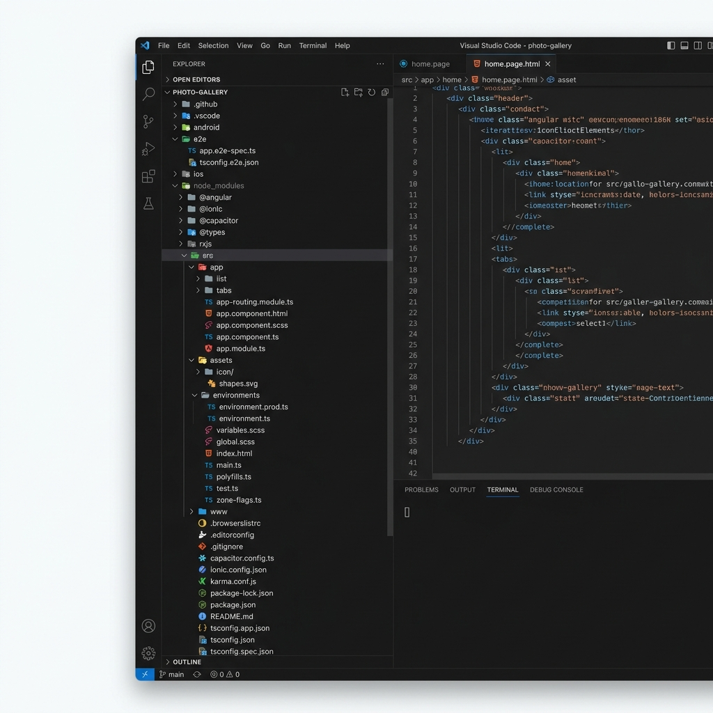
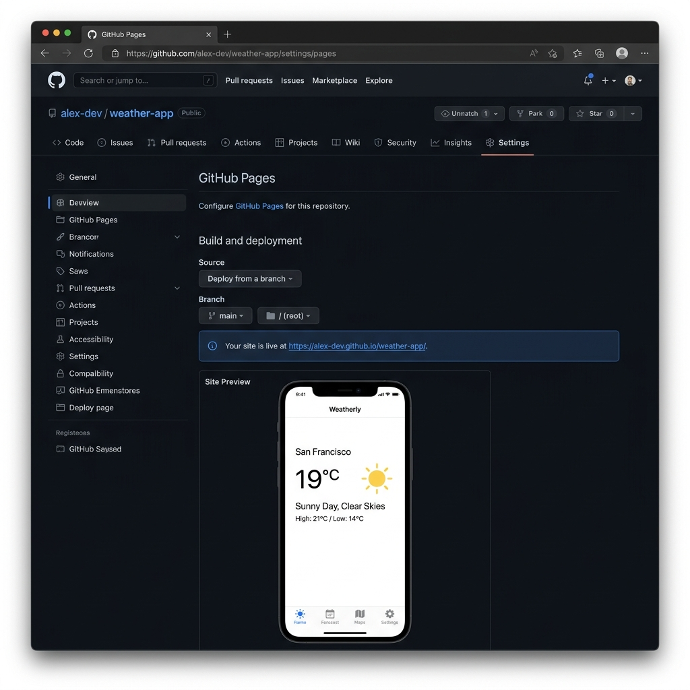

Hola mundo en Ionic (Angular)
A continuación se muestra un ejemplo de integración y despliegue continuos en GitHub Actions de un proyecto Ionic con Angular. Al igual que con el proyecto NodeJS, automatizaremos las pruebas, el análisis estático y, adicionalmente, realizaremos el despliegue en GitHub Pages.
Creación del repositorio y proyecto Ionic
Para empezar, necesitamos un repositorio público en GitHub. En este caso, inicializaremos un proyecto de tipo starter utilizando la última versión de Ionic (Ionic 8).
-
Crea un repositorio vacío en GitHub llamado
ionic-app. -
Clona el repositorio y entra en él:
git clone <url-del-repositorio> cd ionic-app -
Inicializa el proyecto utilizando el CLI de Ionic (puedes usar
tabs,sidemenuoblank):# Instalamos el CLI de Ionic si no lo tenemos npm install -g @ionic/cli # Creamos un proyecto de tipo tabs con Angular ionic start . tabs --type=angular --capacitor --no-git -
Hacemos el commit inicial:
git add -A && git commit -m "Initial Ionic 8 project" git push origin main
|
Comprueba que el archivo  Figure 1. Archivos y carpetas en el estado inicial
|
Configuración de Pruebas y Cobertura
|
Karma está deprecado. Aunque sigue siendo el motor por defecto en muchos proyectos antiguos, el equipo de Angular e Ionic recomienda migrar a soluciones más modernas como Vitest o Web Test Runner. |
A continuación, se presentan las dos alternativas principales para configurar tus pruebas unitarias.
Opción A: Vitest (Recomendado)
Vitest es actualmente la opción preferida por su velocidad y compatibilidad nativa con TypeScript y ESM.
-
Instala las dependencias necesarias:
npm install vitest @analogjs/vitest-angular jsdom --save-dev -
Crea el archivo de configuración
vitest.config.ts:vitest.config.tsimport { defineConfig } from 'vitest/config'; import { AngularVitestPlugin } from '@analogjs/vitest-angular'; export default defineConfig({ plugins: [AngularVitestPlugin()], test: { globals: true, environment: 'jsdom', setupFiles: ['src/test-setup.ts'], include: ['src/**/*.spec.ts'], reporters: ['default', 'junit'], outputFile: 'coverage/test.results.xml' }, });
Opción B: Web Test Runner
Web Test Runner es la alternativa oficial si necesitas que tus pruebas se ejecuten obligatoriamente en un navegador real (Chrome/Firefox) en lugar de en un entorno simulado como jsdom.
-
Configura Angular para usarlo:
ng add @angular-devkit/build-angular:web-test-runner -
Al ejecutar los tests, asegúrate de generar el reporte JUnit:
ng test --web-test-runner --reporters junit
Pruebas de Extremo a Extremo (E2E) con Cypress
Para complementar las pruebas unitarias, utilizaremos Cypress, que nos permite automatizar la interacción del usuario con la interfaz de la aplicación.
-
Instala Cypress como dependencia de desarrollo:
npm install cypress --save-dev -
Crea una configuración básica
cypress.config.ts(o.js) para definir dónde se encuentra la aplicación:cypress.config.tsimport { defineConfig } from 'cypress'; export default defineConfig({ e2e: { baseUrl: 'http://localhost:8100', supportFile: false }, });
Creación del workflow de CI (Integración Continua)
Creamos el archivo .github/workflows/build.yml para automatizar todo el proceso.
name: CI/CD Ionic
on:
push:
branches: [ main ]
pull_request:
branches: [ main ]
jobs:
build:
runs-on: ubuntu-latest
permissions:
contents: write (1)
checks: write
pull-requests: write
steps:
- uses: actions/checkout@v4
- name: Set up Node.js
uses: actions/setup-node@v4
with:
node-version: '20'
cache: 'npm'
- name: Install dependencies
run: npm install
- name: Linting
run: npm run lint
continue-on-error: true
- name: Test
run: npm run test:ci (2)
- name: Build
run: npx ionic build --prod
- name: Upload Artifacts (Build)
uses: actions/upload-artifact@v4
with:
name: www
path: www/
- name: Upload Test Results
if: always()
uses: actions/upload-artifact@v4
with:
name: test-results
path: coverage/test.results.xml
.Resultado de la ejecución del workflow de Ionic
image::github-action-ionic-test.png[role="thumb", align="center"]
- name: E2E Tests (Cypress) 🧪
uses: cypress-io/github-action@v6
with:
start: npx ionic serve
wait-on: 'http://localhost:8100'
browser: chrome
- name: Upload Cypress Screenshots/Videos
if: failure()
uses: actions/upload-artifact@v4
with:
name: cypress-artifacts
path: |
cypress/screenshots
cypress/videos
reporting:
needs: build
runs-on: ubuntu-latest
permissions:
checks: write
pull-requests: write
contents: write
steps:
- uses: actions/checkout@v4
- name: Download Artifacts
uses: actions/download-artifact@v4
with:
name: test-results
- name: Annotate Code Linting Results
uses: ataylorme/eslint-annotate-action@v4
with:
github-token: "${{ secrets.GITHUB_TOKEN }}"
report-json: "coverage/eslint-result.json" (3)
- name: Test Report
uses: dorny/test-reporter@v1
with:
artifact: test-results
name: Karma Tests
path: 'test.results.xml'
reporter: java-junit| 1 | El nombre de la rama main o master depende de cuál es la rama principal. |
| 2 | Ejecuta los tests unitarios. Asegúrate de añadir el script "test:ci": "vitest run" en tu package.json si usas Vitest. |
| 3 | Asegúrate de configurar el script de lint para generar este archivo. |
Reporte de Tests y Cobertura
Al igual que en el ejemplo de NodeJS, utilizaremos test-reporter para visualizar los resultados en GitHub.
Añade un nuevo workflow .github/workflows/tests.yml:
name: 'Test Report'
on:
workflow_run:
workflows: ['CI/CD Ionic']
types: [completed]
jobs:
report:
runs-on: ubuntu-latest
permissions:
checks: write
pull-requests: write
contents: read
steps:
- uses: dorny/test-reporter@v1
with:
artifact: test-results
name: Karma Tests
path: 'test.results.xml'
reporter: java-junitDespliegue en GitHub Pages
Para el despliegue, utilizaremos la acción de James Ives. Es importante notar que si tu aplicación no se despliega en la raíz (ej. usuario.github.io/app/), debes ajustar el base-href.
Modifica el paso de construcción y añade el despliegue en .github/workflows/build.yml:
...
- name: Build
run: npx ionic build --prod -- --base-href /${{ github.event.repository.name }}/ (1)
- name: Deploy to GitHub Pages 🚀
if: github.ref == 'refs/heads/main'
uses: JamesIves/github-pages-deploy-action@v4
with:
folder: www (2)
branch: gh-pages
...| 1 | Ajustamos la URL base para que las rutas funcionen en GitHub Pages. |
| 2 | La carpeta www es donde Ionic/Angular genera el build por defecto. |
Activación en GitHub
-
Una vez ejecutado el workflow por primera vez, verás una nueva rama llamada
gh-pages. -
Ve a
Settings > Pages. -
En
Build and deployment, seleccionaDeploy from a branchy elige la ramagh-pages. -
¡Listo! Tu aplicación Ionic estará disponible en la URL indicada.

|
Para que el despliegue funcione correctamente en una subruta (como GitHub Pages), asegúrate de que el comando de build incluya |
|
EJERCICIOS
|